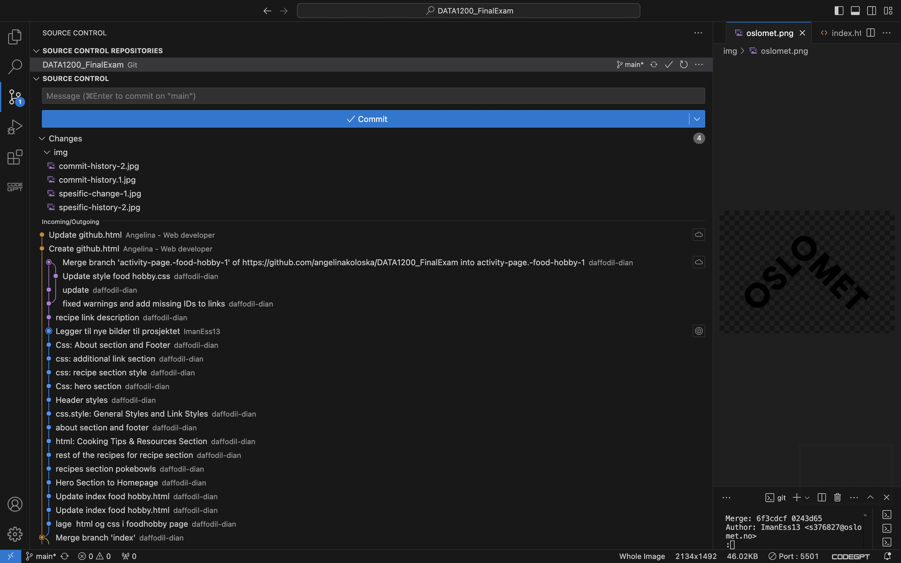
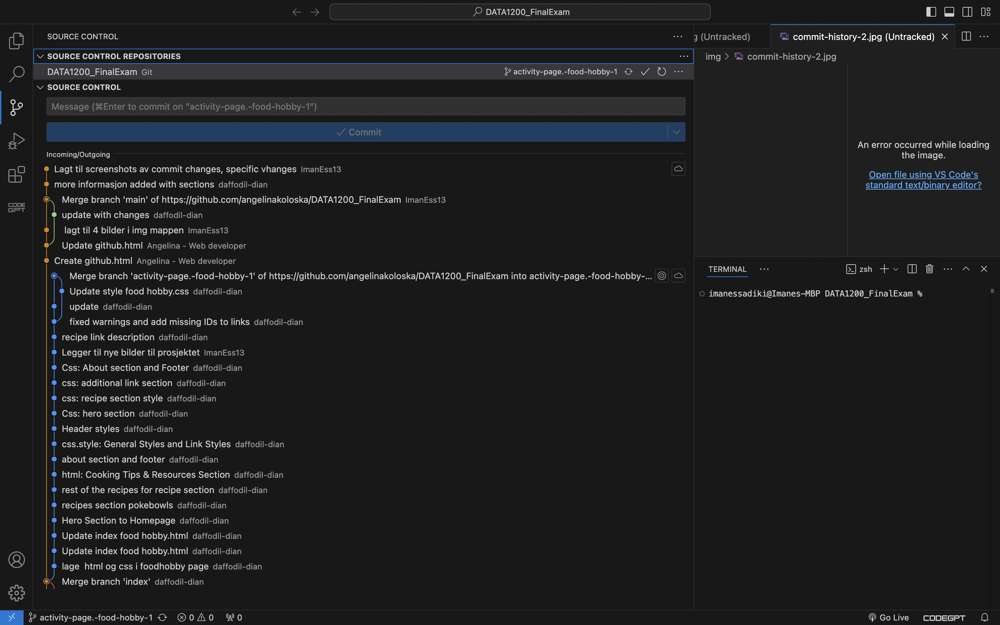

GitHub
Collaboration in GitHub
GitHub offers tools for teamwork, such as pull requests, and issue tracking, enabling efficient collaboration across teams.
Commit history
Commit history helps developers track changes, understand the evolution of a project, and ensure accountability in teamwork.
 Specific changes
GitHub´s tools allow developers to review specific changes between commits, making it easier to maintain high-quality code.


Benefits of Git and GitHub
- Version control ensures changes are tracked.
- Collaborative tools streamline teamwork
- Branching allows isolated feature development.